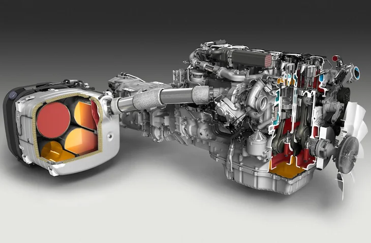
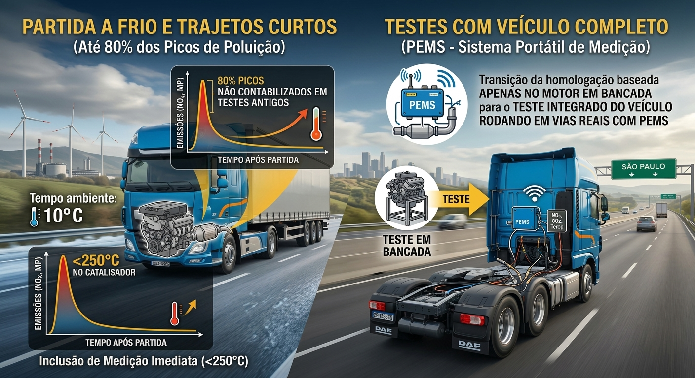
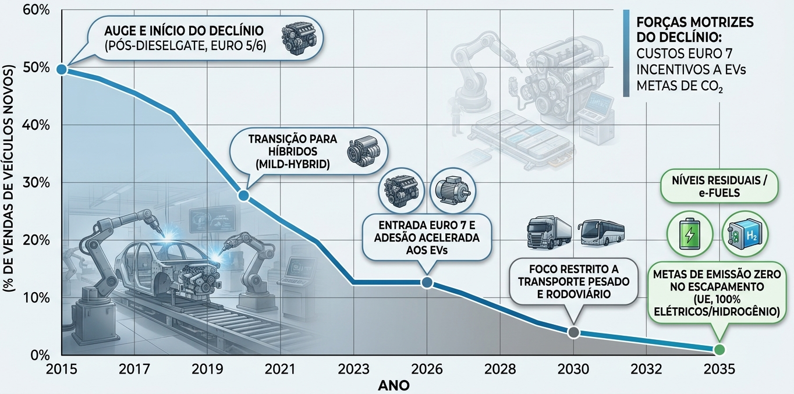
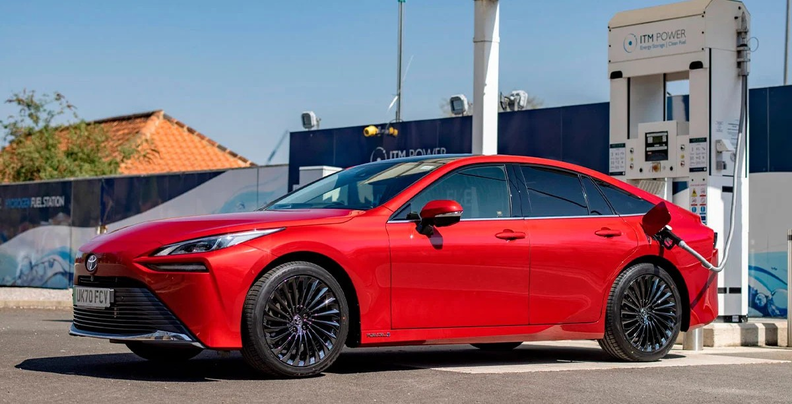
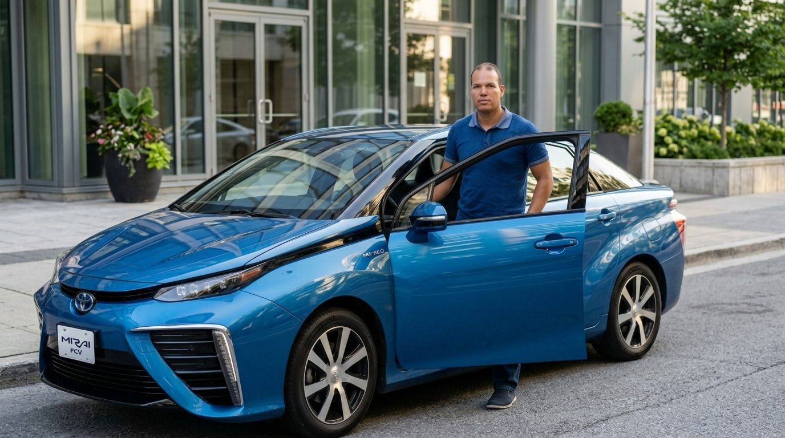

Durante a Revolução Industrial na Inglaterra, o uso massivo do processo químico Leblanc para produzir carbonato de sódio (usado em sabão, vidro e tecidos) liberava toneladas de gás clorídrico (HCl) na atmosfera. Isso devastou florestas, corroeu infraestruturas e causou graves problemas respiratórios nas populações locais.
Com a expansão da indústria pesada e do uso do carvão e petróleo no século XX, grandes episódios críticos de poluição chamaram a atenção global para os perigos dos gases industriais e do smog.
A partir dos anos 1970, o controle de emissões industriais deixou de ser uma discussão meramente local para se tornar uma pauta diplomática internacional.
Ampliaram o foco das emissões para a escala global, regulando gases do efeito estufa (como CO2 e N2O) provenientes do setor produtivo e energético.
A Norma Euro 7 representa uma revisão estrutural na legislação europeia, unificando os regramentos para todas as categorias e focando na vida útil longa dos veículos.
Substituição de diretrizes separadas para veículos leves e pesados por um padrão unificado (Regulamento UE 2024/1257).
Obrigação de conformidade e controle de emissões estendido para até 200.000 km ou 10 anos de operação do veículo.
Pela primeira vez na história automotiva, a legislação regula emissões não provenientes do escapamento. A norma abrange atrito mecânico, aplicando-se inclusive a Veículos Elétricos (EVs).
Estabelecimento de limites estritos de desgaste por frenagem:
Implementação de métodos de medição e padronização para mitigar o desprendimento de microplásticos na rodagem do solo e vias urbanas.
Um glóbulo vermelho do sangue mede de 7 a 8 micrômetros.
Um fio de cabelo mede de 25 a 75 micrômetros.
| Parâmetro | Euro 5 (Proconve P7) | Euro 6 (Proconve P8) | Evolução / Impacto |
|---|---|---|---|
| Óxidos de Nitrogênio (NOx) | 2,0 g/kWh | 0,4 g/kWh | -80% de redução |
| Material Particulado (MP) | 0,02 g/kWh | 0,01 g/kWh | -50% de redução |
| Contagem de Partículas (PN) | Sem limite definido | 6 × 1011 part./kWh (part./km para veículos leves) | Controle severo de partículas ultra-finas (PM2,5) |
| Hidrocarbonetos (HC) | 0,46 g/kWh | 0,13 g/kWh | ~70% de redução |
| Parâmetro | Euro 5 (Proconve P7) | Euro 6 (Proconve P8) | Evolução / Impacto |
|---|---|---|---|
| Filtro de Partículas (DPF) | Geralmente ausente em pesados (usava-se o SCR) | Obrigatório | Retenção de até 98% da fuligem |
| Injeção de Combustível | Common Rail ou Unidades Injetoras (1.800 a 2.000 bar) | Common Rail de altíssima pressão (2.500 bar ou mais) com múltiplas injeções por ciclo (8 a 9; pré e pós) | Maximizar a eficiência e minimizar a formação de poluentes na origem |
| Pós-Tratamento (Escape) | SCR (Redução Catalítica Seletiva - ARLA 32) | DOC (Catalisador de Oxidação Diesel) + ASC (Catalizador de Escape de Amônia) + DPF + EGR | Arquitetura de pós-tratamento complexa |
| Recirculação de Gases (EGR) | Usado pontualmente por algumas montadoras | Amplamente combinado com o SCR para reduzir a geração primária de NOx no cilindro | Diminuição drástica de NOx |
| Combustível Exigido | Diesel S10 ou S50 | Exclusivo Diesel S10 | Exige óleos lubrificantes Low SAPS |
ARLA 32 (Agente Redutor Líquido Automotivo): Mistura de Uréia a
32,5% com Água Desmineralizada a 67,5%.
Low SAPS: Com baixos teores de Cinzas
Sulfatadas, Fósforo e Enxofre - Sulphated Ash, Phosphorus and Sulfur.

| Condição de Condução | Abertura da EGR | Porcentagem Recirculada | Objetivo Principal |
|---|---|---|---|
| Marcha lenta / Motor frio | Fechada ou mínima | 0% a 5% | Estabilidade da lenta e aquecimento rápido |
| Cruzeiro / Carga parcial | Totalmente ativa | 15% a 50% | Redução de emissões de NOx e economia de combustível |
| Aceleração total / Subidas | Fechada | 0% | Desempenho máximo e entrega de potência |
Faixa Ideal de Trabalho da EGR
Rotação do Motor: Entre 1.500 RPM e 2.800 RPM (motores a Diesel) e 1.800 RPM
e 3.200 RPM (motores a Gasolina/Flex).
Carga do Motor: Carga parcial/média (pedal do acelerador mantido levemente
pressionado entre 15% e 40%).
Velocidade de Cruzeiro: Em rodovias plana (fórmulas de cruzeiro), isso
equivale geralmente a 80 km/h a 110 km/h na marcha mais alta do câmbio.
Criados pelo CONAMA e coordenados pelo IBAMA, o PROCONVE (Programa de Controle da Poluição do Ar por Veículos Automotores) e o PROMOT alinham o Brasil aos padrões internacionais.
A nova regra corporativa diz: "Uma fabricante pode vender carros que poluem acima do limite, desde que venda em quantidade suficiente outros carros que poluem menos (ou zero) para que a média geral de todos os carros vendidos no ano fique dentro do limite estipulado."
Exemplo Prático:
O limite médio corporativo de emissão para NOx é de 80 mg/km por veículo leve de
passageiros vendido no ano.
Uma montadora vende apenas dois modelos no mercado brasileiro:
Cenário 1: Vendas Descompensadas (Multa ou Não Conformidade). Se a montadora vender 2.000 unidades do SUV A e apenas 100 unidades do Elétrico B:
Média Corporativa = (2.000 × 90) + (100 × 0) 2.000 + 100 = 180.000 2.100 ≈ 85,71 mg/km
Cenário 2: Vendas Compensadas (Conformidade Garantida). Para conseguir vender as 2.000 unidades do SUV A que polui 90 mg/km, a montadora incentiva a venda do Elétrico B e consegue comercializar 300 unidades dele no mesmo ano:
Média Corporativa = (2.000 × 90) + (300 × 0) 2.000 + 300 = 180.000 2.300 ≈ 78,26 mg/km
Resultado: A média corporativa anual fica abaixo de 80 mg/km. A fabricante pode continuar vendendo o SUV sem penalidades.
Testes em Condições Reais de Condução abrangendo frio e calor extremo, trajetos curtos, medição de particulas a partir de 10μm (PN10), e a entrada de poluenges não regulamentados (óxido nitroso N2O e amônio NH3).
Sistemas On-Board Monitoring (OBM) embarcados com sensores permanentes e proteção rigorosa anti-adulteração.
Controle inédito do desprendimento de poeira de pastilhas de freio e desgaste de pneus para todas as motorizações.
Métricas obrigatórias de retenção de capacidade para veículos híbridos e 100% elétricos.
A Euro 7 impõe rigor severo no transporte rodoviário de cargas e passageiros para garantir operação limpa nas cidades.
Inclusão de medição imediata após a partida (<250°C no catalisador), momento onde ocorre até 80% dos picos de poluição não contabilizados em testes antigos.
Transição da homologação baseada apenas no motor em bancada para o teste integrado do veículo rodando em vias reais com PEMS (Sistemas Portáteis de Medição).

Diferente do OBD tradicional que apenas detecta falhas pontuais, o OBM (On-Board Monitoring) mede continuamente a quantidade de poluentes emitida durante todo o uso do veículo.
Para proteger o consumidor e evitar o descarte precoce, a Euro 7 estabelece limites mínimos de retenção de energia da bateria do veículo.
O maior peso dos pacotes de bateria aumenta o atrito dos pneus com o solo. A indústria precisa balancear a capacidade da bateria com compostos de rodagem leves e resistentes.
| Tipo de Pastilha | Composição / Princípio de Funcionamento | Papel na Norma Euro 7 |
|---|---|---|
| Compostos NAO (Non-Asbestos Organic - orgânico sem amianto) | Fibras sintéticas, cerâmicas, aramida, resinas térmicas e lubrificantes minerais. | Atuam por adesão (transferência de película química) em vez de abrasão física, gerando partículas maiores e em menor quantidade. |
| Pastilhas Cobre-Free (<0,5%) | Eliminação do cobre e ligas pesadas, substituídos por grafite sintético e novos sulfetos minerais. | Atende aos limites ecológicos da União Europeia contra contaminação por metais pesados e microplásticos. |
| Pads de Baixo Aço (Low-Steel Euro 7) | Formulações com teores reduzidos de ferro e liga metálica pareados com discos revestidos. | Evitam a formação de poeira de ferro de alta densidade (PM2.5 e PM10) durante desacelerações bruscas. |
| Tecnologias | Composição / Princípio de Funcionamento | Papel na Norma Euro 7 |
|---|---|---|
| Revestimentos por Deposição a Laser (LMD / Laser Cladding) | Aplicação de uma camada ultra-resistente de ligas duras sobre a estrutura de ferro fundido. As misturas utilizam Aço Inoxidável reforçado com Carboneto de Titânio ou Carboneto de Tungstênio. | Esse processo torna a superfície até dez vezes mais dura que o ferro comum, reduzindo drasticamente o desgaste superficial e evitando a oxidação. |
| Tratamento Térmico FNC (Nitrocarbonetação Ferrítica) | Processo químico-térmico de difusão de nitrogênio e carbono na camada externa do disco. | Aumenta a resistência ao atrito sem a necessidade de aplicar camadas espessas de revestimento extra. |
| Ligas de Nano-Ligas e Alumínio | Substituição parcial do silício na fundição por alumínio refinado e inclusão de nano-ligas. | A microestrutura obtida melhora a coesão do material, reduzindo a emissão de micropartículas em cerca de 40% e reduzindo o peso total do componente em mais de 20%. |
| Tecnologia | Densidade Energética | Vida Útil (Ciclos) | Custo | Segurança |
|---|---|---|---|---|
| Íon de Lítio Convencional (NMC) | Média-Alta (~250 Wh/kg) |
~1.000 - 1.500 | Médio (US$ 100 a US$ 130 / kWh) | Moderada |
| Lítio-Ferro-Fosfato (LFP / LMFP) | Média (~180 - 210 Wh/kg, de 30% a 50% mais pesadas) |
~3.000 - 5.000+ | Baixo | Alta |
| Íon de Sódio (Na-Ion) | Baixa-Média (~160 Wh/kg, de 40% a 60% mais pesadas) |
~3.000+ | Muito baixa | Alta |
| Estado Sólido (Solid-State) (cerâmico, polímero ou de sulfeto) |
Muito Alta (~400 - 500 Wh/kg, de 30% a 50% mais leves) |
~2.000 - 4.000+ | Alto (US$ 350 a US$ 600+ / kWh) | Excelente |
| Química de Compostos Avançados (Formulação de Borracha) | Nova Geração de Sílica e Polímeros Covalentes: Utilização de cadeias de polímeros funcionais e redes de ligação cruzada mais fortes para evitar o desprendimento de fragmentos microplásticos nas estradas sob torque intenso. | Inclusão de Borracha Natural Sustentável e Bio-Resinas: Substituição de derivados de petróleo por resinas bio-baseadas e compostos naturais que mantêm a flexibilidade sem deformação rápida. | Uso de Recovered Carbon Black (rCB): Incorporação de "negro de fumo" reciclado (20% a 30%) para aumentar a resistência mecânica ao rasgo mantendo baixa taxa de atrito destrutivo. |
| Otimização do Desenho da Banda de Rodagem e Estrutura (Tread & Cavity Design) | Redistribuidores de Pressão de Contato: Reformulação da área de contato (footprint) do pneu com o solo, distribuindo o peso do veículo de forma homogênea para evitar pontos de pressão excessiva e desgaste localizado. | Sipagens de Geometria 3D Intertravadas (IA): Lâminas nos blocos da banda de rodagem que se travam mutuamente durante acelerações e travagens, reduzindo a torção do pneu e diminuindo a erosão por atrito. |
| Categoria | Poluente / Origem | Limite Euro 6 | Limite Euro 7 |
|---|---|---|---|
| Leves (Gasolina) | NOx | 60 mg/km | 60 mg/km |
| Leves (Diesel) | NOx | 80 mg/km | 60 mg/km (Equiparado) |
| Leves (Todos) | Partículas de Freio (ICE) | Não regulado | 7 mg/km |
| Leves (Todos) | Partículas de Freio (EV) | Não regulado | 3 mg/km |
| Pesados (Caminhões) | NOx (Ciclo de bancada) | 0,40 g/kWh | 0,26 g/kWh |
| Categoria de Pneu | Veículos Correspondentes | Entrada em Vigor dos Limites |
|---|---|---|
| C1 | Automóveis de passageiros | 1º de julho de 2028 |
| C2 | Comerciais leves / Vans | 2030 |
| C3 | Caminhões e ônibus | 2032 |
A taxa de abrasão dos pneus é medida em gramas de desgaste por quilômetro percorrido por tonelada de carga do veículo (g/km/t)
| Categoria | Nome/Cigla | Correspondente |
|---|---|---|
| Veículos Leves | EPA Tier 3 e CARB LEV III (Low Emission Vehicle III) | Euro 6 |
| Veículos Pesados | US EPA 2010 Heavy-Duty Standard / CARB Heavy-Duty Low NOx | Euro 6 |
| Veículos Leves | EPA Multi-Pollutant Emissions Standards (MY 2027–2032) e CARB Advanced Clean Cars II (ACC II) | Euro 7 |
| Veículos Pesados | EPA Heavy-Duty Clean Trucks Plan (2027+) e CARB Advanced Clean Trucks (ACT) / Omnibus Rule | Euro 7 |
A complexidade e custo das tecnologias de pós-tratamento para Euro 7 aceleram o declínio do motor a diesel no transporte pesado.
Redução imediata de NOx e fuligem. Opção comercialmente viável para médias e longas distâncias, eliminando a dependência do ARLA 32.
Emissão zero no escapamento (apenas vapor de água H2O). Alta autonomia ideal para rotas rodoviárias pesadas.
Eficiência total para frotas urbanas e de distribuição local, com custo de rodagem reduzido.
| Poluente / Emissão | Diesel com Arla 32 (SCR + DPF) | Gás Natural (GNV) | Biometano |
|---|---|---|---|
| Material Particulado (Fuligem/PM) | Baixo (retido em até 95% pelo filtro DPF) | Praticamente Zero (-95% a -99% que o diesel) | Praticamente Zero |
| Óxidos de Nitrogênio (NOx) | Baixo (reduzido em até 90% pelo Arla 32) | Muito Baixo (-80% a -90% que o diesel SCR) | Muito Baixo |
| Dióxido de Carbono (CO2) no escapamento | Referência (100%) | -15% a -20% em relação ao diesel | -15% a -20% no escapamento |
| CO2 Equivalente | Referência (100%) | -15% a -20% em todo o ciclo | Até -90% a -95% (neutro em carbono) |
| Ruído e Vibração | Padrão | Até 50% mais silencioso | Até 50% mais silencioso |

Aumento de custo de produção estimado entre €200 e €2.000 por veículo, exigindo adaptação em linhas de montagem e novos fornecedores.
Aumento do custo de aquisição e necessidade de capacitação técnica para gerenciar sistemas OBM e frotas descarbonizadas.
A Norma Euro 7 deixa de ser apenas uma barreira regulatória para se tornar o maior catalisador de inovação tecnológica da história automotiva recente, forçando o avanço simultâneo de veículos a combustão, híbridos e elétricos.
A viabilidade da transição para o Hidrogênio exige a análise integrada entre o custo do veículo e o investimento em infraestrutura de abastecimento.

